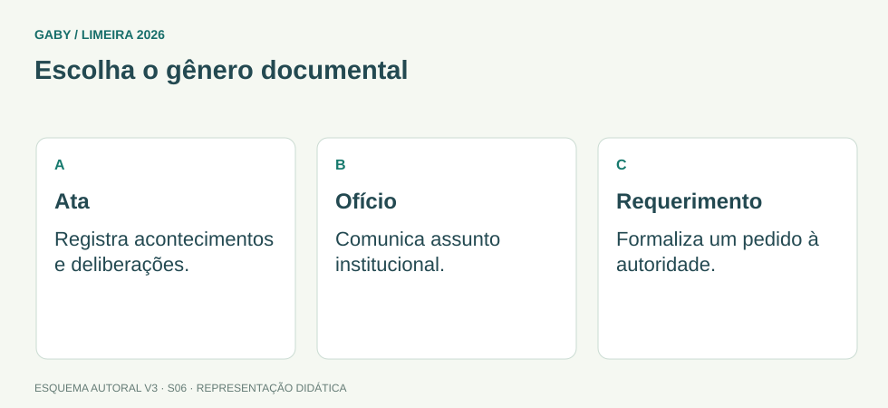

Objetivos do módulo
- Reconhecer finalidade de atas, ofícios, requerimentos e correspondências oficiais.
- Redigir com clareza, objetividade e impessoalidade.
- Estruturar registros de fatos sem ambiguidades.
- Evitar linguagem coloquial, excesso e informações sem fundamento.
Escolha o gênero documental

Descrição em texto do esquema
- Ata: Registra acontecimentos e deliberações.
- Ofício: Comunica assunto institucional.
- Requerimento: Formaliza um pedido à autoridade.
Oficina visual · aplique o esquema
Qual documento é adequado para registrar deliberações de uma reunião? Liste três informações essenciais.
Atividade autoral complementar da V3. Registre sua resposta; a resolução está no arquivo de gabarito e revisão.
Mapa do conteúdo
1. Princípios de redação administrativa
A comunicação oficial deve ser clara, objetiva, precisa e adequada à situação. O texto precisa permitir compreensão uniforme, sem depender de interpretações subjetivas.
Impessoalidade não significa frieza: significa centrar a comunicação no interesse administrativo e no fato, evitando opiniões pessoais desnecessárias.
2. Ata
Ata registra acontecimentos, discussões e deliberações de reunião ou evento colegiado. Deve identificar contexto, participantes conforme regra aplicável, assuntos e decisões de forma fiel e ordenada.
Em prova, atenção à ideia de que ata é registro de fatos ocorridos; não deve ser transformada em texto opinativo do secretário.
3. Ofício e correspondência oficial
Ofício é instrumento de comunicação oficial entre órgãos, autoridades ou destinatários no contexto administrativo. Sua estrutura segue padrão institucional e deve apresentar assunto, mensagem e identificação de forma organizada.
Modelos exatos podem variar e ser atualizados. Em questões conceituais, priorize finalidade, clareza, formalidade e identificação adequada.
4. Requerimento
Requerimento é utilizado para formular pedido à autoridade competente. Deve identificar o requerente, apresentar o pedido e, quando necessário, fundamento e documentação.
O servidor que recebe não deve prometer deferimento; deve protocolar/orientar e encaminhar à autoridade competente.
5. Revisão antes do envio
Confira destinatário, assunto, nomes, datas, anexos, referências, ortografia e coerência. Em documentos escolares, um erro de nome ou data pode produzir consequências maiores que um simples erro estético.
Exemplos resolvidos passo a passo
Exemplo 1
Situação: Ata contém: “A diretora apresentou uma ideia maravilhosa, que todos deveriam aceitar.”
Exemplo 2
Situação: Responsável entrega pedido escrito e exige garantia de deferimento.
Exemplo 3
Situação: Ofício menciona “documentos anexos”, mas nenhum arquivo está junto.
Pegadinhas e erros frequentes
- Confundir ata com opinião.
- Usar linguagem vaga ou coloquial.
- Prometer resultado de requerimento.
- Esquecer anexos citados.
- Expedir documento sem conferir nomes e datas.
Resumo de prova
- Redação oficial busca clareza, precisão e impessoalidade.
- Ata registra fatos e deliberações.
- Ofício realiza comunicação oficial.
- Requerimento formaliza pedido.
- Revisão evita erros administrativos.
Exercícios do módulo
Resolva sem consultar o arquivo de gabarito. As questões são autorais e construídas para treinar os conceitos do edital.
- linguagem literária
- registro fiel de fatos e deliberações
- opiniões pessoais do redator
- propaganda
Fonte: Presidência da República — Manual de Redação, 3ª edição.
- foco no interesse e fato administrativo, sem opiniões pessoais indevidas
- proibição de clareza
- uso de gírias
- ausência de destinatário
Fonte: Presidência da República — Manual de Redação, 3ª edição.
- registrar estoque
- substituir histórico escolar
- fazer ata de reunião
- formular pedido à autoridade competente
Fonte: Presidência da República — Manual de Redação, 3ª edição.
- rasurar o pedido
- descartar
- dar encaminhamento conforme procedimento e competência
- garantir deferimento
Fonte: Presidência da República — Manual de Redação, 3ª edição.
- nada
- destinatário, assunto, anexos, nomes e datas
- apenas a cor da fonte
- somente o tamanho do papel
Fonte: Presidência da República — Manual de Redação, 3ª edição.
- pode ser juízo subjetivo inadequado se não refletir deliberação registrada
- é sempre obrigatória
- substitui decisão
- é elemento essencial
Fonte: Presidência da República — Manual de Redação, 3ª edição.
- eliminar informações essenciais
- usar frases ambíguas
- ser informal
- comunicar o necessário sem rodeios que prejudiquem compreensão
Fonte: Presidência da República — Manual de Redação, 3ª edição.
- uma planilha
- um tipo de arquivo morto
- forma de comunicação oficial administrativa
- documento exclusivo de notas escolares
Fonte: Presidência da República — Manual de Redação, 3ª edição.
- abreviações inventadas
- texto compreensível e sem ambiguidade desnecessária
- uso de jargão obscuro
- frases incompletas
Fonte: Presidência da República — Manual de Redação, 3ª edição.
- ser corrigido/conferido antes da expedição
- ser enviado assim mesmo
- ter o anexo omitido sem revisão
- ser arquivado como correto
Fonte: Presidência da República — Manual de Redação, 3ª edição.
Quando terminar, abra Secretário de Escola 06 - Redação Oficial - Atas, Ofícios e Requerimentos - Gabarito e Revisão.
Checklist de domínio
- ☐ Reconhecer finalidade de atas, ofícios, requerimentos e correspondências oficiais.
- ☐ Redigir com clareza, objetividade e impessoalidade.
- ☐ Estruturar registros de fatos sem ambiguidades.
- ☐ Evitar linguagem coloquial, excesso e informações sem fundamento.
Meta do módulo: 80% ou mais nas questões, sem depender de consulta.
Referências e conteúdos auxiliares
- Presidência da República — Manual de Redação, 3ª ediçãoClareza, redação oficial, concordância, regência e pontuação. Referência de apoio; modelos locais podem ter regras próprias.
Referências externas de apoio consultadas para a V3 em 27/09/2026. A origem das questões é o material autoral do projeto; estes links não indicam que uma instituição publicou ou validou os exercícios. As páginas externas precisam de internet. Em informática, confira a versão do programa; em legislação, observe o recorte e as regras de atualização do edital.